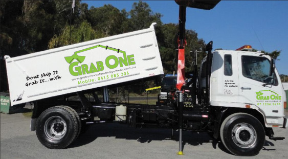

<div id="body1">
  <div id="container">
    <div style="margin:0;padding:0;">
      <div>
        
      </div>
      <div id="links"></div>
    </div>
    <div class="row">
      <div class="main-page-container">
        
      </div>
      <div>
        <div class="main-page-container2">
          <div style="color:white;font-size:13px;text-align:center">
            <div>
              <h1 style="font-size: 22px;color: #66C538;">About Us</h1>
              <p> We are a family run business located on the sunshine coast offering a new alternative to waste
                collection, our aim is to provide a focused, tailored collection &amp; delivery service to builders,
                landscapers,tree surgeons,shopfitters, utility companies, local authorities, civil engineering companies
                &amp; the general public. </p>
              <p> We can offer a large variety of collection volumes up to 8m3 in one load with smaller volumes handled
                with ease, our service will also include 1,2,3,4m3 bulk bags to keep your waste confined if
                required. </p>
              <p> The delivery service &amp; the Idea of delivering your loose materials is designed to work in
                conjunction with your waste collection to save the customer time &amp; money, the truck comes equipped
                with a clamshell bucket (grab) this gives us the advantage of reaching over walls, fences &amp; other
                obstacles.
                The truck comes equipped with a remote control unit so the driver can place himself in the best
                advantage point to over see the process of collection/delivery. </p><br>
            </div>
          </div>
        </div>
      </div>
    </div>
    <div id="footer"></div>
  </div>

</div>
